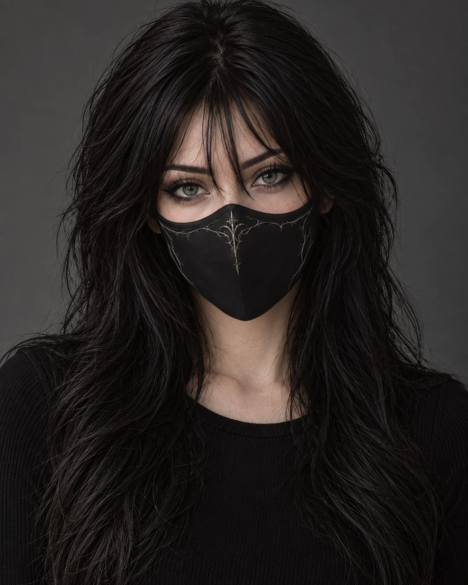

Virtual creator by Eclipse Forge
ERIDA
VICE.
Познакомимся ближе.
У каждого образа есть другая сторона. Проведите по маске — и увидите её.
Мышь: проведите по маске. Телефон: коснитесь кнопки или рисуйте по горизонтали. Клавиатура: кнопка либо стрелки на портрете; Escape — сброс.
Спокойный режим: лицо открывается кнопкой, без движущегося следа.
Загружаем портреты…

Один персонаж. Две стороны.Erida Vice / 01